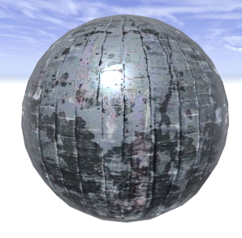

setMaterial operation
Syntax
setMaterial(material)
Parameters
- material (string[])
A string array containing key-value pairs in the form of [ attr-name0, value0, attr-name1, value1, ... ]. The names of the material attributes arewithout the "material." prefix.
Description
Sets the material attributes of the current shape's material according to material. This operation allows for setting of multiple (all) material attributes in one operation.
The result will be the same as using set() to set each material attribute individually.
Related
- getMaterial function
- readMaterial function
- resetMaterial operation
- set operation
- material attributes
- material.color attribute
- material.map texture layers
- color operation
- texture operation
- Texturing: Essential Knowledge
Example 1
myMaterial = [ "color.r", "1.0",
"color.g", "0.0",
"color.b", "0.0",
"opacitymap", "builtin:default" ]
Lot --> primitiveCube()
scaleUV(0,0.25,0.25)
setMaterial(myMaterial)
Using setMaterial() to set a number of material attributes in one operation. |
Example 2: loading a .cgamat file
|  |
Lot --> primitiveSphere()
setMaterial(readMaterial("materials/Metal2/Metal2.cgamat"))
Using setMaterial() and readMaterial() to load a .cgamat material description (including textures) from disk.
CityEngine's CGA Material Encoder allows for writing cgamat files via model export. |
Example 3: using a CSV file to define a material
RefExampleCSV-->
primitiveCube()
setMaterial(readStringTable("exampleMaterial.csv"))
Material descriptions in CSV files can be used via readStringTable().
|
Copyright ©2008-2022 Esri R&D Center Zurich. All rights reserved.